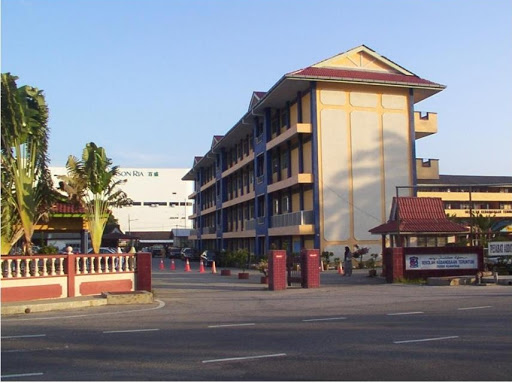
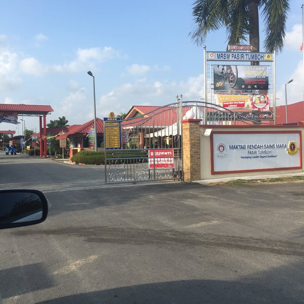

MY EDUCATION JOURNEY

My education journey started here when i enter this school for 3 years which standard 1, 2 & 3, then i moved to another school because i had to follow my parents with their working procedure.

My education journey continue here for another 3 years to finish my primary school. It was an amzaing journey because i had a good teacher here who encourage me to well in school. Forget to inform this is in Kuantan, Pahang.

Next, is my secondary school. I have to go back to Kelantan again to follow my dad because of his job promotion. Alhamdullilah. I stayed studying at this school for 5 years which is amazing because i had a great friends here.

Next, is my current college which is Uitm Machang where i had already finish my Diploma here and still continue to study here for my degree, whatever happens im still grateful cause i had a oppotunity to continue my study and soon after finish my study, to continue working inshaAllah. Please pray the best for me.